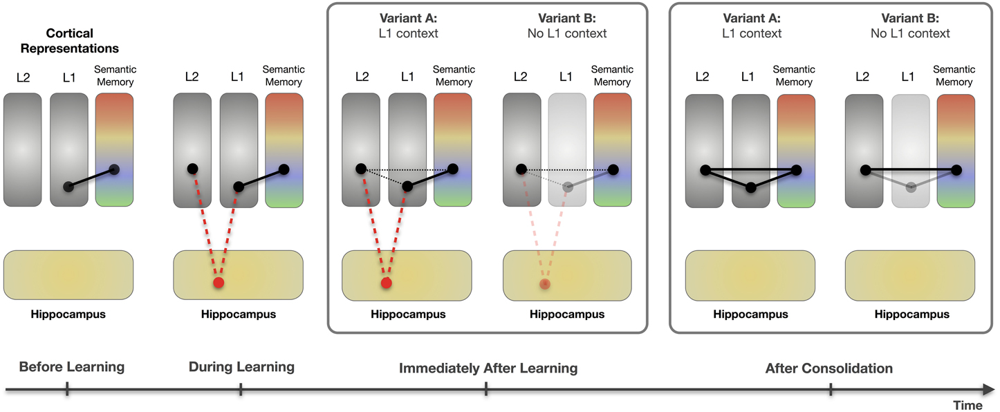
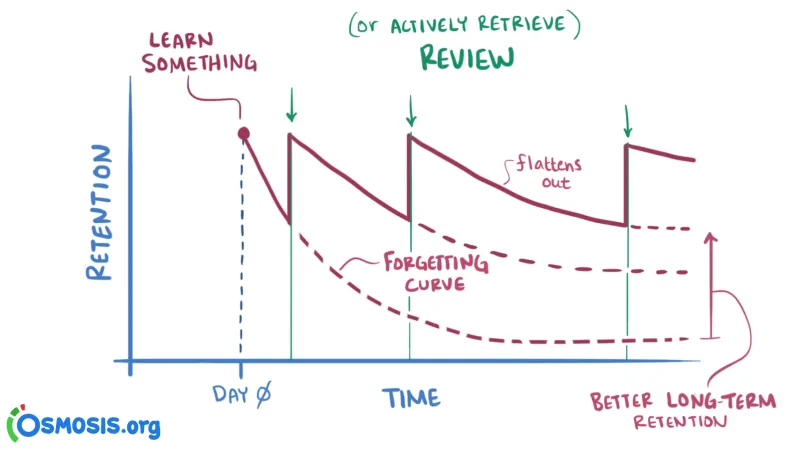

There are many tricks but these are the ones I found most effective
One memorization stratagy is "grouping". To use grouping you associate a set of data or information with a group. for instance it is difficult to memorize a set of 10 numbers quickly however if you group it into two groups of three and a group of four like they do with credit cards you will be able to remember it when someone tells it to you.
Another great way to remember specific things like words is to associate them with words that you already know. An example of how this could be aplied is if you were trying to learn the french word ciel meaning sky, you could make note of the fact that ciel sounds like cieling which is basicaly just an artificial sky.
perhaps the most effective but longest term strategy is long term review. just by revisiting a concept or term after you learnt a while ago you can greatly increase your ability to remeber it in the long term. A way to aply this is to do some study far before it is due and then revisit it just before the exam or whyever you need to remeber it.
